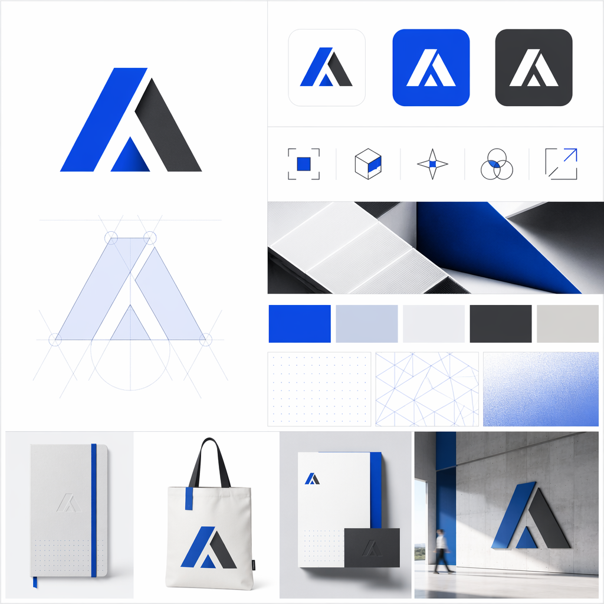

Run: atelier-toolchain-test
Brief: Atelier AI Design Harness toolchain test package

| File | Bytes | SHA-256 |
|---|---|---|
| artifacts/00-gallery.html | 1238 | a254cdfaef196240 |
| artifacts/artifact-manifest.json | 985 | 6eb755e7f88eb8dd |
| artifacts/edits/atelier-edited-icon.png | 1248892 | 9fce7175feb2c15e |
| artifacts/edits/atelier-edited-icon.png.json | 921 | 1ef57501c1b42520 |
| artifacts/generated-images/atelier-reference-icon.png | 630135 | 2f0d454d959efacc |
| artifacts/generated-images/atelier-reference-icon.png.json | 778 | fdf0faf05da8ec6e |
| brief.json | 1283 | 16947f06b0219c3c |
| bus.jsonl | 5247 | 2957e0cb9d4e55b5 |
| research/assets/manifest.json | 817 | 772a04645758efe4 |
| research/assets/tongji-reference-image.png | 11590 | 77283ce33bd34c02 |
| research/assets/tongji-reference-image.png.json | 636 | ade0bea6fb6fdb96 |
| research/assets/validation.json | 615 | 402f628252b2bc31 |
| research/evidence.json | 912 | 38df5f357a597229 |
| research/sources/c3a972a9-ca0e-480d-b8ba-31f4b58caf2f.txt | 135099 | 99798fe9d7cc4d73 |
| research/tool-test-summary.json | 2742 | 4991bac1f63b319d |
| research/tool-test-summary.md | 1470 | 1c30ad7a538c0e65 |